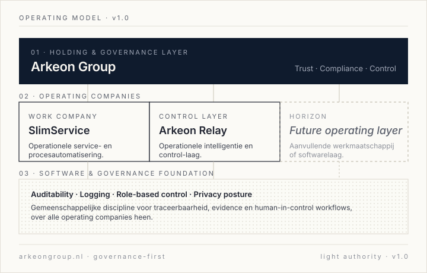

Work Company
SlimService
Operationele service- en procesautomatisering voor klantprocessen. Eerste werkmaatschappij van de groep, gericht op directe inzetbaarheid en omzetontwikkeling op korte termijn.
Meer over SlimServiceArkeon Group ontwikkelt en bestuurt werkmaatschappijen en softwarelagen voor operationele controle, klantprocessen, traceerbaarheid en betrouwbare automatisering. Wij bouwen evidence-driven en met discipline, niet met aankondigingen.
Arkeon Group is opgezet als governance- en holdinglaag boven de operating companies. SlimService levert de operationele service- en automatiseringslaag. Arkeon Relay levert de premium operationele intelligentie- en control-laag. De groep zet de discipline, het beleid en het kader.

Twee operating companies opereren onder Arkeon Group, elk met een eigen rol. Beide werken op een gedeeld fundament van governance, traceerbaarheid en operationele discipline.
Operationele service- en procesautomatisering voor klantprocessen. Eerste werkmaatschappij van de groep, gericht op directe inzetbaarheid en omzetontwikkeling op korte termijn.
Meer over SlimServicePremium operationele intelligentie en control-laag. Ondersteunt traceerbaarheid, audit-trails, evidence en human-in-control workflows over operationele processen heen.
Meer over Arkeon RelayGeen certificaten claimen die wij nog niet bezitten. Wel: structureel werken volgens herkenbare disciplines, met taal die het verschil tussen aspiratie en realiteit eerbiedigt.
Beleid en kader vóór bouw. Beslissingen krijgen een eigenaar, een spoor en een datum.
Least privilege als uitgangspunt. Secrets en toegang worden bewust gescheiden van code en data.
Ontworpen in lijn met AVG-denken en in voorbereiding op verdere kaders zoals BIO en NIS2.
Lokale verwerking als route voor data-control en operationele veerkracht, waar dat past.
Belangrijke beslissingen en uitvoer zijn herleidbaar tot bron, rol en moment.
Dataminimalisatie, expliciete grondslag en duidelijke verwerkingsverantwoordelijkheid.
Backup, herstelpaden en uitwijk-denken zijn onderdeel van het ontwerp, niet een nagedachte.
Documentatie wordt gevoerd zoals een aanbestedingstraject erom kan vragen, vanaf dag een.
De woorden gericht op, ontworpen voor, voorbereid op en in ontwikkeling richting worden bewust gebruikt. Zie ook disclosure & posture.
Arkeon Group is opgezet om gefaseerd uit te breiden over operationele lagen en compliance-gevoelige domeinen. Wij communiceren plannen pas wanneer ze operationeel of contractueel zijn vastgelegd.
Operationele intelligentie en governance-laag verstevigen via SlimService en Arkeon Relay, inclusief documentatie- en auditdiscipline rondom de eerste klantprocessen.
Aanvullende operating companies of softwarelagen onder de groep, in aangrenzende dienst- en softwaredomeinen waar de groepsdiscipline directe waarde toevoegt.
Sector-specifieke governance- en data-control toepassingen in compliance-gevoelige omgevingen, inclusief publieke sector en aanpalende domeinen.
Group Horizon-uitspraken zijn richtinggevend, geen toezeggingen. Zie about & horizon.
Lokale verwerking is voor Arkeon een strategische route om data-control te versterken, variabele afhankelijkheden te beperken en operationele veerkracht te vergroten in trust-gevoelige inzet.
Dit betekent niet dat alle verwerking lokaal is. Het betekent wel dat de groep bewust kiest waar lokale inferentie passend is, en daar ontwerp- en documentatie-discipline op richt. Voor klanten met hogere data-control eisen, of voor processen die doorlopend beschikbaar moeten blijven, is lokale verwerking een serieus uitgangspunt.
Voor partners, opdrachtgevers met governance-gevoelige processen of geïnteresseerden in de structuur van Arkeon Group. Wij sturen vooraf wat documentatie zodat het gesprek meteen inhoudelijk kan zijn.